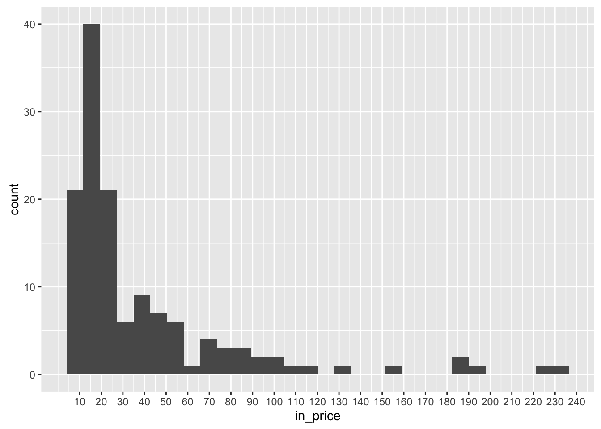
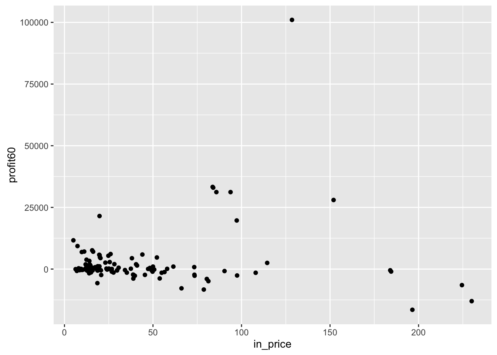
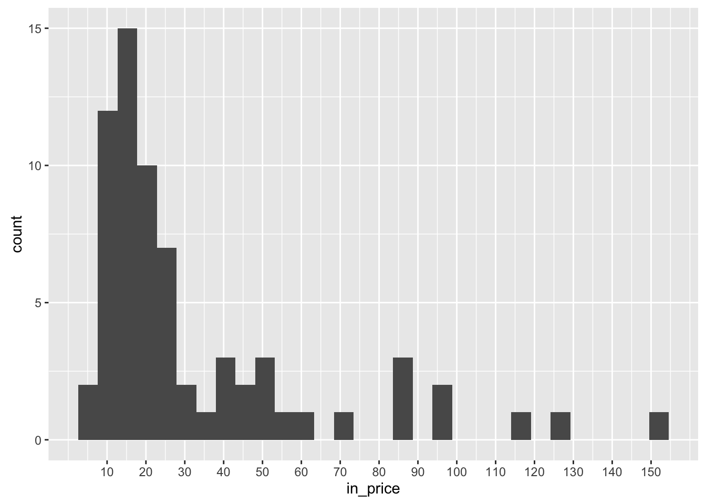

此回測沒有很嚴謹，因為大量抓歷史資料，會常被ban，只是大概測測。
| 出場策略 | profit | 勝率 |
|---|---|---|
| 月線出場 | 183530 | 0.4328358 |
| 季線出場 | 319230 | 0.5074627 |
| CCI<0出場 | 170040 | 0.4179104 |
| CCI<-100出場 | 126310 | 0.4776119 |
大致上獲利分布：
| <0 | 0~500 | 500~1000 | 1000~10000 | >=10000 |
|---|---|---|---|---|
| 66 | 19 | 38 | 31 | 9 |
大概觀察一下會被挑出的區間，進場價格幾乎都來自10~20之間，不過這點應該是因為目前都以外資買超張數來作考慮，若用外資金額考慮，可能又不一樣了。

當然，會賺錢的，大概都落在10~20這個區間了。


另外，很容易挑到金融股，大約24%的機率。
| 出場策略 | profit | 勝率 |
|---|---|---|
| 月線出場 | 3390 | 0.4666667 |
| 季線出場 | 9850 | 1.0000000 |
| CCI<0出場 | 1770 | 0.4000000 |
| CCI<-100出場 | 4490 | 0.6666667 |
不過，大概只能賺零用錢。